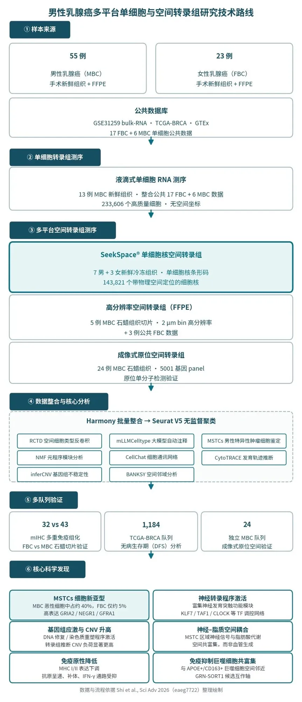
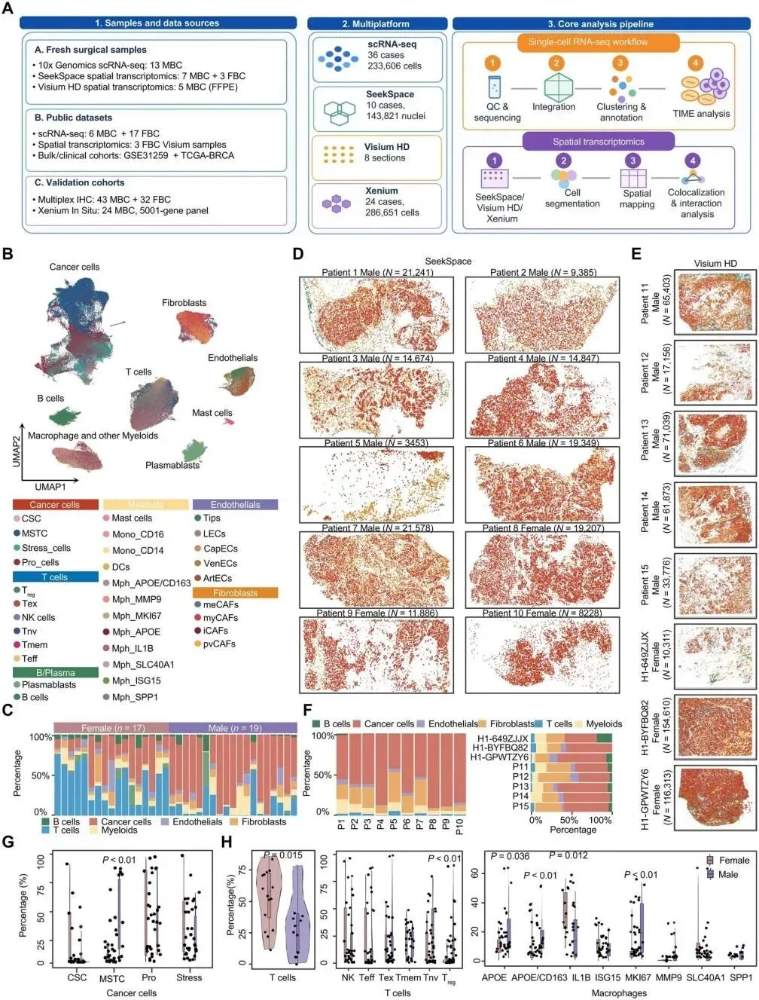
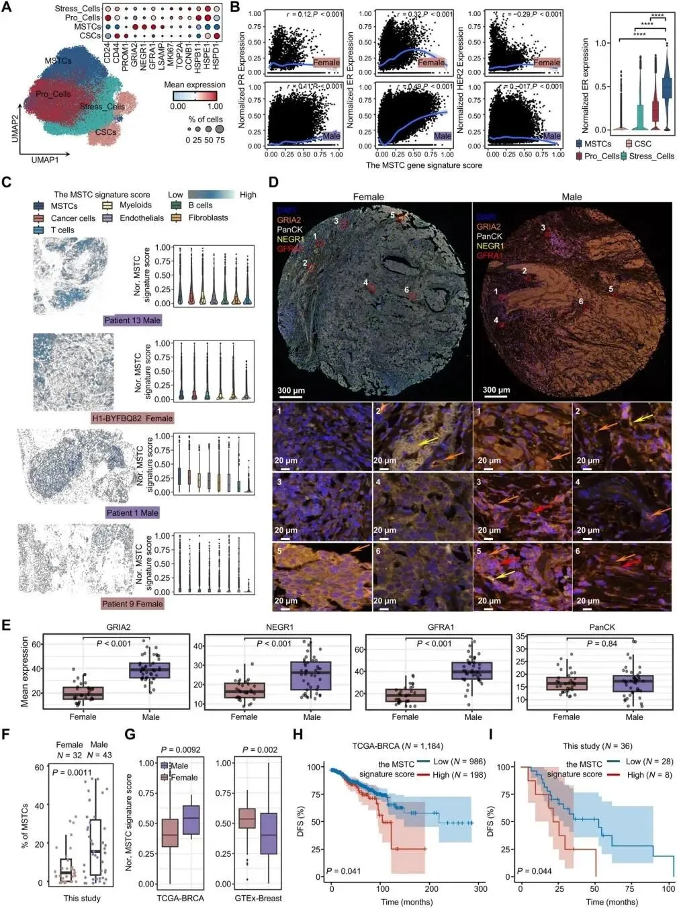
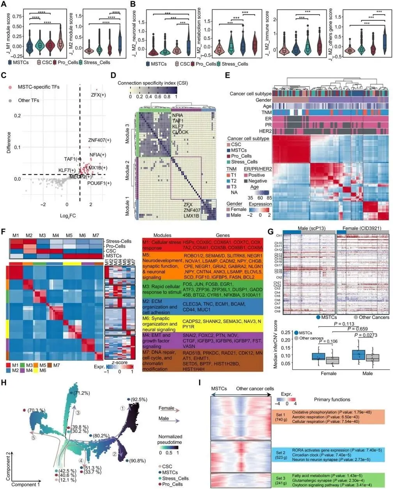
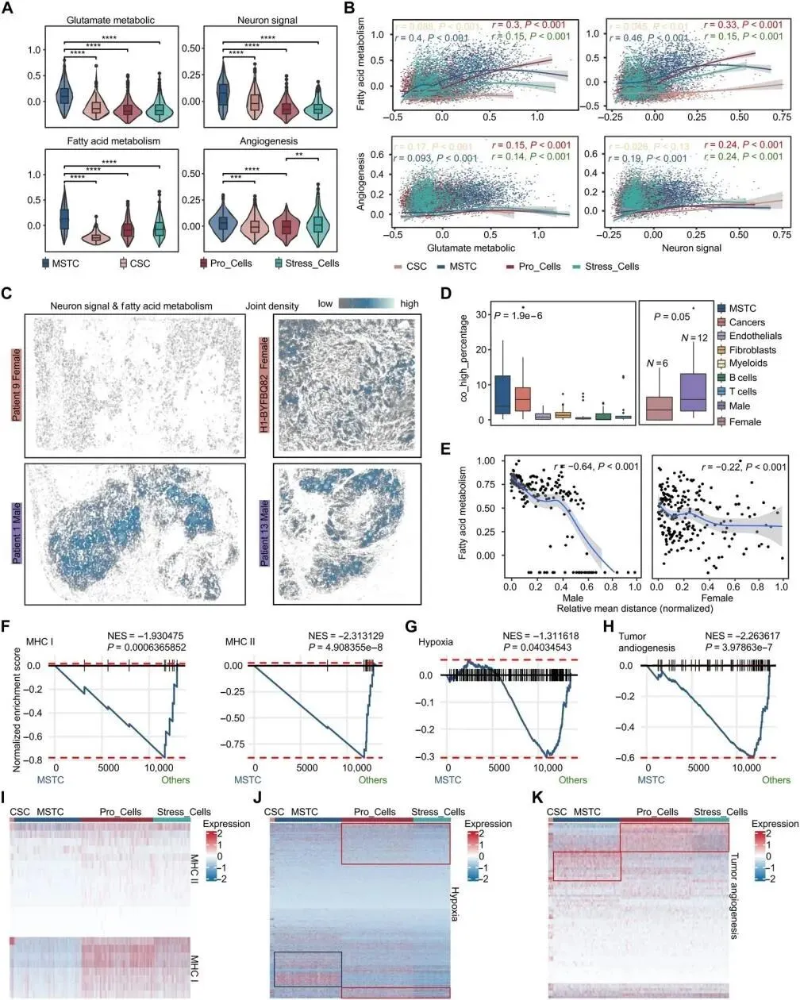
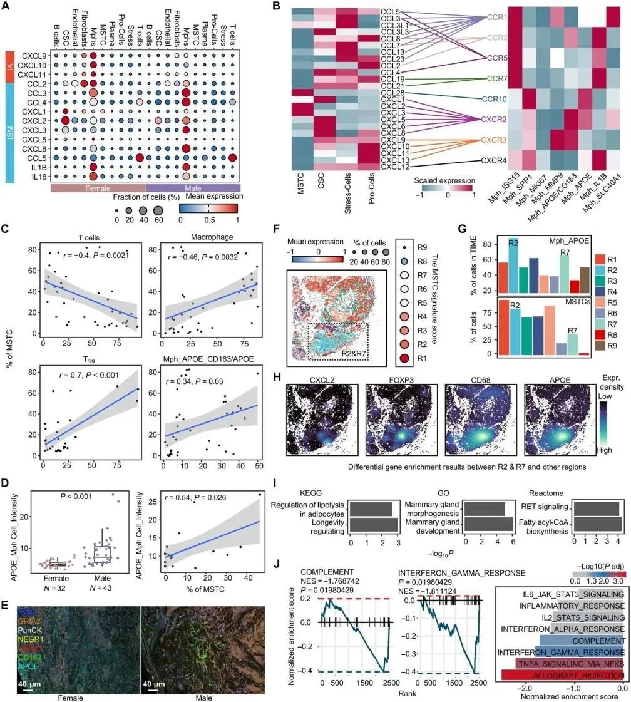
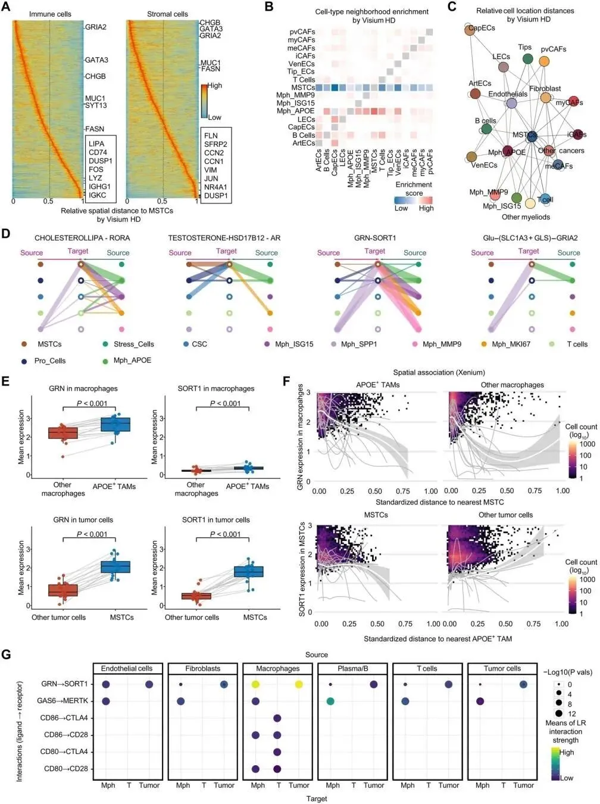

男性乳腺癌里的"神秘细胞"：SeekSpace® 助力多平台单细胞空间图谱揭示性别特异恶性状态
原文：https://mp.weixin.qq.com/s?__biz=MzAwMzIzOTk5OQ==&mid=2247542656&idx=1&sn=4135addb9337eed108afc2e2d4b9fb29&chksm=9b3c5ed0ac4bd7c63629505987156fc14bc153eeb31fd14a3a7bc0a3bd4c6d6c66c34b8beb06#rd 合集：文献速递
导语 · 一图看懂
多平台单细胞与空间转录组图谱发现：男性特异肿瘤细胞 MSTCs （约占男性乳腺癌恶性细胞的 40% ）兼具神经样程序、高 CNV 负荷、脂质代谢耦合与低免疫原性，并与 APOE⁺ 巨噬细胞空间共富集——这为“男性乳腺癌预后为何更差”提供了细胞学答案，也带来了新的诊疗靶点线索。
乳腺癌并非女性专属。男性乳腺癌（Male Breast Cancer, MBC）仅占全部乳腺癌的约 1% ，预后却显著差于女性乳腺癌——因为我们对它的了解，长期来自女性乳腺癌的“经验外推”。
2026 年 9 月，北京大学第一医院张秀丽教授、解放军总医院第一医学中心王建东教授、国家癌症中心/中国医学科学院肿瘤医院邢念增教授为通讯作者，北京中医药大学未来医学学院施豪缘教授为第一作者联合国内多中心完成的研究发表于 Science Advances ：构建了覆盖 23 例女性、55 例男性乳腺癌、超过 66 万个细胞 的多平台单细胞与空间转录组图谱，鉴定出一类富集于男性乳腺癌、罕见于女性乳腺癌的性别特异肿瘤细胞亚群 MSTCs（male-specific tumor cells） ，并揭示其神经样恶性程序、高拷贝数变异（CNV）负荷、脂肪酸代谢耦合，以及与 APOE⁺ 巨噬细胞空间互作共同塑造的免疫抑制微环境，为男性乳腺癌的后续机制研究与治疗靶点开发提供了新的方向。
在这项多平台研究中，寻因生物 SeekSpace® 单细胞空间转录组技术 承担了全部新鲜手术组织（10 例：7 男 3 女）的空间解析，共捕获 143,821 个细胞核 ，完成了 MSTC 特征评分的组织分布定位、神经样程序与脂肪酸代谢的空间耦合验证等关键空间分析；其余空间技术路线分别负责 FFPE 存量样本验证与独立大队列确认。不同技术路线相互印证，共同构成“恶性状态—代谢耦合—免疫微环境 ”的完整空间证据链。
一、客户原声：SeekSpace® 如何助力这项研究
关于 SeekSpace® 在本研究中的作用，论文原文这样写道：
📄 原文引述 ①（研究方法部分）
"We collected fresh surgical resection tissue samples from 10 patients with untreated breast cancer (7 males and 3 females) for SeekSpace single-cell nuclear spatial transcriptome sequencing, capturing transcriptome data from 143,821 cell nuclei."
——研究团队收集了 10 例未经治疗的乳腺癌新鲜手术组织（7 例男性、3 例女性），采用 SeekSpace 单细胞核空间转录组测序 ，共捕获 143,821 个细胞核 的转录组数据。
📄 原文引述 ②（研究结果部分）
"SeekSpace technology can capture transcriptome information at the single-cell nuclear level while providing spatial localization, enabling us to visualize the spatial distribution characteristics of the tumor microenvironment."
——SeekSpace 技术能够在单细胞核水平捕获转录组信息并提供空间定位 ，使研究者能够可视化肿瘤微环境的空间分布特征。
基于 SeekSpace® 数据，研究团队完成了三项关键工作：构建 10 例新鲜组织切片的单细胞核空间图谱（原文图 1D）；定位男性特异性肿瘤细胞 MSTC 的特征信号于肿瘤富集区域（原文图 2C）；呈现神经信号与脂肪酸代谢信号的空间重叠关系（原文图 4C）。
📄 原文引述 ③（致谢部分）
"We thank Shanghai Fengshengu Biotechnology Co. Ltd., OE Biotech Co. Ltd. (Shanghai, China), and Beijing SeekGene BioSciences Co. Ltd. (Beijing, China) for the assistance in this study."
——研究团队在论文致谢中正式感谢了本研究 SeekSpace® 空间转录组技术提供方北京寻因生物（Beijing SeekGene BioSciences） 对本研究的协助。
二、研究背景
男性乳腺癌长期被边缘化：样本稀缺导致研究不足，临床指南照搬女性乳腺癌经验；且即使校正临床分期后，MBC 预后仍显著差于女性乳腺癌——提示存在未被揭示的性别特异生物学差异 。
核心科学问题 ：男性乳腺癌的肿瘤细胞和微环境，究竟与女性乳腺癌有何不同？

▲ 研究技术路线：样本 → 多平台测序 → 整合分析 → 多队列验证（依据 Shi et al., Sci Adv 2026 整理绘制）
三、研究结果
01
多平台单细胞空间图谱：66 万+ 细胞的性别分层全景
关于研究设计，论文原文写道："This study constructed a single-cell and single-cell spatial sequencing dataset containing 23 FBC samples and 55 MBC samples, covering three different spatial transcriptomics platforms."（本研究构建了包含 23 例女性乳腺癌与 55 例男性乳腺癌样本的单细胞及单细胞空间测序数据集，覆盖三种不同的空间转录组平台。）
| 技术路线 | 样本 | 规模 | 承担任务 |
|---|---|---|---|
| 液滴式单细胞 RNA 测序 | 36 例供体 | 233,606 细胞 | 单细胞参考图谱 |
| SeekSpace® 单细胞空间转录组 | 10 例新鲜手术组织（7 男 3 女） | 143,821 细胞核 | 单细胞核分辨率空间图谱 |
| 高分辨率空间转录组（FFPE） | 5 例男性 FFPE + 3 例公开女性数据 | 8 张切片 | FFPE 空间验证、空间结构域分析 |
| 成像式原位空间转录组 | 24 例男性 FFPE | 286,651 细胞 | 大队列独立验证 |
| 多重免疫组化（mIHC） | 43 男 + 32 女石蜡样本 | — | 蛋白水平验证 |
 |
图 1 | 多平台单细胞与空间转录组研究设计。A：样本与分析流程总览；B：36 例供体单细胞图谱（7 大细胞谱系、33 个亚型）；C：男女队列细胞组成对比；D：SeekSpace® 单细胞核空间图谱（10 例新鲜手术切片）；E：FFPE 高分辨率空间图谱；G/H：MSTC 及关键免疫细胞亚群在男女间的显著差异。（图源：Shi et al., Sci Adv 2026）
研究整合 233,606 个单细胞、143,821 个 SeekSpace® 空间细胞核与 286,651 个原位空间细胞，总计覆盖超过 66 万个细胞 ，鉴定出 7 大类细胞、33 个亚型 。关键发现：MSTCs 在 MBC 恶性细胞中约占 40%，在 FBC 中仅约 5% ；MBC 中 T 细胞总体减少但调节性 T 细胞（Treg）升高，APOE⁺/CD163⁺ 巨噬细胞在 MBC 富集。SeekSpace® 空间数据直观展示了上述细胞在组织中的分布格局。
02
MSTCs 与不良预后密切相关
研究鉴定出四个主要恶性细胞亚群：肿瘤干细胞（CSCs）、应激细胞（Stress-Cells）、增殖细胞（Pro-Cells）和男性特异性肿瘤细胞（MSTCs，高表达 GRIA2、NEGR1、GFRA1） 。
激素受体关联： 基于单细胞转录组数据，MSTC 特征评分与 ER 表达正相关，且在 MBC 中相关性更强；但与 PR、HER2 在单细胞水平相关性很弱——提示 MSTC 并非简单的“ER 阳性腔面细胞”翻版。
空间定位： SeekSpace® 与 FFPE 高分辨率空间数据显示，高 MSTC 评分区域与肿瘤组织区域重合；mIHC 在 32 例 FBC 和 43 例 MBC 石蜡切片上证实，MBC 中 MSTCs 比例显著高于 FBC。
临床意义： TCGA-BRCA 队列和本研究 36 例 MBC 回顾性队列均显示，MSTC 高评分患者无病生存期（DFS）显著更差 。作为对照，CSC、应激细胞、增殖细胞特征均未显示与 DFS 的显著关联——说明这种不良预后关联是 MSTC 特有的。

图 2 | MSTC 的空间分布与预后意义。C：单细胞/伪单细胞分辨率的 MSTC 特征评分空间映射；D：FBC 与 MBC 的 mIHC 全片对比（GRIA2/NEGR1/GFRA1 标记 MSTC）；F：MBC 中 MSTC 比例显著高于 FBC；H/I：MSTC 高分患者无病生存显著更差。（图源：Shi et al., Sci Adv 2026）
03
MSTCs 的神经转录程序与基因组应激
单细胞解析发现，MSTCs 贡献了 bulk 研究中 J_M2 亚型的神经模块、但缺失其免疫激活模块——这解释了为何“J_M2 预后较好”与“MSTCs 预后差”看似矛盾。研究鉴定出 KLF7、TAF1、CLOCK 等 53 个 MSTCs 特异性激活的转录因子 ；NMF 分析显示 MSTCs 高表达神经突触功能模块（M5/M6）和 DNA 修复/染色质重塑模块（M7）；inferCNV 分析显示 MBC 中 MSTCs 的拷贝数变异负荷显著高于其他恶性细胞 ；轨迹分析表明 MSTCs 处于肿瘤发育轨迹末端，属于相对分化的恶性状态。

图 3 | MSTCs 的转录与基因组特征。A/B：J_M1/J_M2 模块评分及神经子模块归属；C/D：MSTC 特异性转录因子与调控模块；F：NMF 七大功能模块；G：inferCNV 显示 MSTCs 拷贝数变异负荷更高；H/I：发育轨迹与伪时序分析。（图源：Shi et al., Sci Adv 2026）
04
空间上的“神经–脂质耦合”与低免疫原性
SeekSpace® 与 FFPE 高分辨率空间数据的联合密度图显示，MBC 切片中神经信号与脂肪酸代谢“双高”区域明显多于 FBC ，且越靠近 MSTC 富集区域，脂肪酸代谢评分越高——证实 MSTC 的神经程序与脂质代谢在空间上耦合，而非与血管生成耦合。同时基因富集分析显示，MSTCs 中 MHC-I/II 类分子表达下调、抗原呈递通路被抑制，呈现低免疫原性 特征。

图 4 | MSTC 的神经–脂质空间耦合与低免疫原性。C：SeekSpace® 与 FFPE 空间数据中神经信号与脂肪酸代谢评分的空间联合密度图；D：两类信号“双高”细胞在 MBC 癌区富集；E：距 MSTC 越近，脂肪酸代谢信号越强；F–K：MHC-I/II、缺氧、血管生成通路在 MSTC 中下调。（图源：Shi et al., Sci Adv 2026）
05
MSTCs 与免疫抑制巨噬细胞空间共富集
MSTCs 比例与 T 细胞比例负相关（r = −0.4 ），与巨噬细胞（r = 0.46 ）、Treg（r = 0.7 ）及 APOE⁺/CD163⁺ 巨噬细胞（r = 0.34 ）正相关；mIHC 确认 APOE⁺/CD163⁺ 巨噬细胞在 MBC 中更高且与 MSTCs 比例正相关。
空间结构域分析（BANKSY 算法）在 FFPE 高分辨率空间数据上鉴定出 MSTCs 与 APOE⁺/CD163⁺ 巨噬细胞共富集的关键区域（R2/R7） ，这些区域选择性下调补体、IFN-γ 反应、TNF-α/NF-κB 等抗肿瘤免疫通路。

图 5 | MSTC 与免疫抑制性巨噬细胞的空间共富集。E：mIHC 显示两类细胞组织原位共定位；F/G：空间结构域分析锁定 R2/R7 关键生态位；H：关键区域神经信号、APOE⁺/CD163⁺ 巨噬细胞与 Treg 信号呈高富集；I/J：关键区域脂肪酸代谢通路上调、抗瘤免疫通路下调。（图源：Shi et al., Sci Adv 2026）
06
GRN–SORT1：巨噬细胞与肿瘤细胞的候选互作轴
空间梯度分析显示，随着与 MSTCs 距离增加，免疫功能相关基因（CD74、IGHG1、IGKC）和血管生成相关基因（CCN1、CCN2、VIM）的表达梯度发生显著变化。细胞通讯分析预测 MSTCs 与巨噬细胞通过胆固醇/睾酮-脂代谢通路及 GRN–SORT1、谷氨酸受体通路 通讯。
研究团队在 24 例独立 MBC 队列的成像式原位空间数据上完成验证：SORT1 在肿瘤细胞（尤其 MSTCs）高表达，GRN 在 APOE⁺ 巨噬细胞高表达 ，二者空间邻近且表达随距离呈梯度变化；巨噬细胞还表达 CTLA4 相关配体，提示其同时调控 T 细胞。

图 6 | MSTC 与巨噬细胞的细胞通讯网络。A：随距 MSTC 空间距离增加，免疫/基质功能基因表达梯度上升；D：APOE⁺、SPP1⁺、ISG15⁺ 巨噬细胞经 GRN–SORT1 及谷氨酸受体通路与 MSTC 通讯；E/F：大队列原位空间数据验证 GRN–SORT1 轴的空间梯度。（图源：Shi et al., Sci Adv 2026）
四、研究总结
1
图谱资源
整合单细胞测序与三种空间转录组平台，构建覆盖 23 例 FBC、55 例 MBC 的性别分层单细胞空间图谱，公开超过 66 万个细胞 的数据资源。
2
性别特异恶性状态
鉴定出 MSTCs，兼具神经转录程序、基因组应激、脂质代谢耦合、低免疫原性 四重特征。
3
“肿瘤–免疫”抑制生态
MSTCs 与 APOE⁺/CD163⁺ 免疫抑制性巨噬细胞空间共富集，通过 GRN–SORT1 等候选轴形成抑制性生态位。
4
预后评估与新靶点
MSTC 特征与更差的无病生存期相关，为 MBC 的预后评估和治疗靶点开发提供了新方向。
五、SeekSpace® 技术在本研究中的应用及优势
（一）应用情况
研究团队对 10 例乳腺癌患者（7 例男性、3 例女性）的新鲜手术切除组织进行 SeekSpace® 测序，共捕获 143,821 个带空间定位的单细胞核转录组数据 。SeekSpace® 通过空间标签原位标记细胞核实现空间溯源，在本研究中承担了 MSTC 特征评分组织分布的可视化（原文图 2C）与神经信号–脂肪酸代谢空间耦合的呈现（原文图 4C）等关键空间分析。
（二）技术特点
1
单细胞核条形码，兼顾分辨率与空间定位
每一个细胞核都带有可溯源的空间坐标，可在单细胞核分辨率下解析肿瘤微环境，同时保留细胞在组织中的原始位置——这对识别 MSTCs 与巨噬细胞的空间邻近关系提供了直接证据。
2
单细胞核方案，减少组织解离偏差
实体瘤组织质地致密，酶解制备单细胞悬液可能导致部分细胞类型偏好性丢失；SeekSpace® 采用细胞核提取方案，更适合从致密实体瘤组织中完整捕获细胞多样性。
3
多平台交叉验证，提升结论可靠性
SeekSpace® 在新鲜组织上提供单细胞核分辨率的空间全景，FFPE 空间技术与成像式原位技术分别在存量样本和独立大队列上完成验证——MSTCs 的空间定位、神经–脂质耦合等发现均经跨平台一致确认 ，是真实生物学信号而非单一技术偏差。
4
与单细胞转录组数据直接整合
SeekSpace® 数据本质上是带空间位置标签的单细胞核转录组，可直接对接单细胞分析生态（Seurat、RCTD 等）完成细胞分群与注释，同时回答“这些细胞位于组织何处”的关键问题。
（三）SeekSpace® V1.1 性能升级
SeekSpace® 已助力肺癌转移、肝癌 TLS 机制、慢性肉芽肿病等多项高水平研究成果发表。目前 SeekSpace® 单细胞空间转录组试剂盒已升级至 V1.1 版 ，细胞捕获数和基因捕获能力进一步提升，部分测试数据如下：
| 物种 | 组织 | 细胞数 | 中位基因/细胞 | 中位UMI/细胞 | 基因组比对率 | 置信比对率 |
|---|---|---|---|---|---|---|
| 人 | 肾上腺 | 31,241 | 1,255 | 2,181 | 92.00% | 74.10% |
| 人 | 脑瘤 | 63,481 | 1,332 | 2,243 | 92.00% | 88.50% |
| 人 | 胚胎 | 23,976 | 856 | 1,200 | 95.00% | 60.00% |
| 人 | 胰腺癌 | 43,982 | 796 | 1,091 | 90.45% | 68.40% |
| 人 | 肝癌 | 42,427 | 880 | 1,109 | 92.13% | 77.10% |
| 人 | 食管癌 | 60,470 | 1,342 | 2,113 | 95.01% | 85.41% |
| 人 | 肺癌 | 60,833 | 1,181 | 1,842 | 93.96% | 83.21% |
| 人 | 胃癌 | 51,985 | 1,138 | 1,731 | 93.29% | 77.62% |
| 人 | 膀胱癌 | 50,604 | 1,715 | 2,759 | 94.26% | 82.96% |
| 人 | 前列腺癌 | 37,374 | 1,865 | 3,246 | 93.48% | 82.41% |
| 人 | 甲状腺癌 | 59,967 | 1,320 | 2,039 | 93.71% | 86.28% |
| 人 | 乳腺癌 | 61,992 | 1,666 | 2,770 | 95.45% | 86.99% |
| 鼠 | 脑 | 32,775 | 912 | 1,546 | 82.00% | 76.00% |
| 鼠 | 肺癌 | 59,988 | 1,094 | 1,750 | 83.44% | 74.57% |
| 鼠 | 膀胱癌 | 51,624 | 726 | 1,211 | 87.18% | 75.79% |
▲ 本文研究对应的乳腺癌测试数据已加粗标出
样本珍贵，经不起反复试错 ——单细胞核空间转录组，欢迎了解 SeekSpace®。
📞 项目咨询 / 技术交流：欢迎后台留言或联系寻因生物各地技术支持团队
文献信息
Shi H, Zhang X, Cai S, Xu B, Wang H, Cui J, Yang Z, Chen S, Zhou Z, Zhang S, Cai Y, Zhang Y, Zhu L, Wang J, Xing N. Multiplatform single-cell and spatial transcriptomics reveal sex-specific malignant states and architecture in male breast cancer. Sci Adv. 2026 Sep